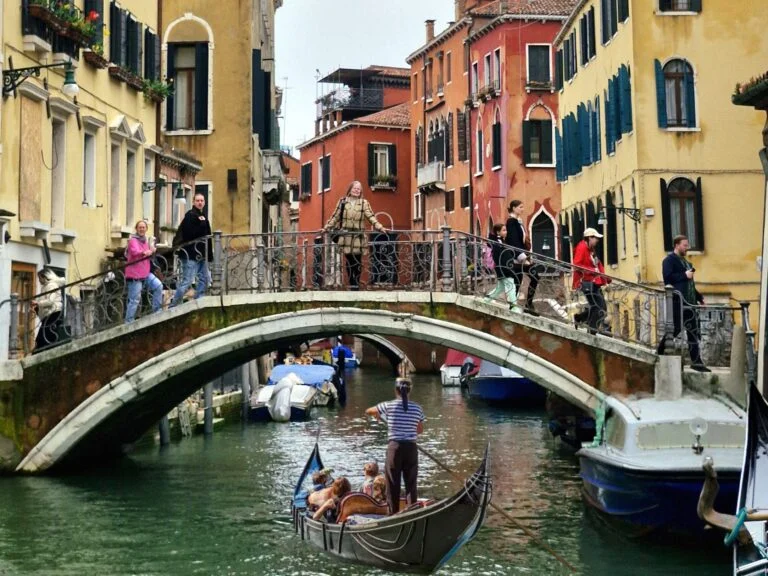
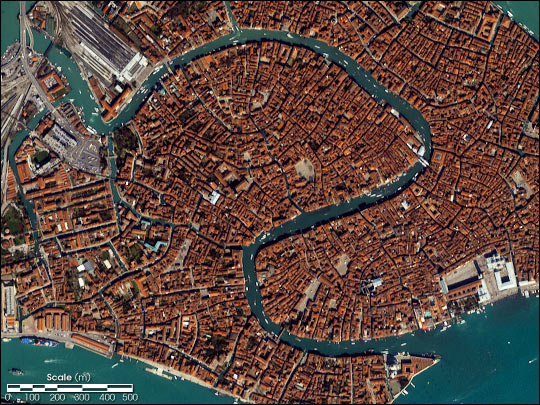
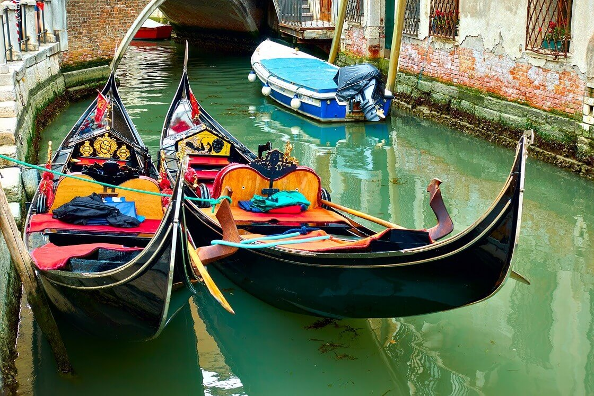

Sobre o destino
Veneza é uma das cidades mais encantadoras do mundo, famosa por seus canais, gôndolas e arquitetura histórica. É um destino perfeito para quem busca romantismo, cultura e paisagens únicas.
Pontos Turísticos Imperdíveis:
- Praça de São Marcos: O coração da cidade.
- Basílica de São Marcos: Arquitetura impressionante.
- Grande Canal: Principal via de transporte aquático.
- Ponte de Rialto: Uma das pontes mais famosas.
- Passeio de gôndola: Experiência clássica em Veneza.
Guia Rápido

Melhor época: Abril a junho e setembro a outubro - clima mais agradável e menos turistas.

Como chegar: Aeroporto Marco Polo é o principal, com acesso de barco ou ônibus ao centro.

Idioma: Italiano - inglês é muito comum em áreas turísticas.

Moeda: Euro (€) - cartões são amplamente aceitos.
Custos Médios
- Hotel: €120 - €400 por noite
- Alimentação: €15 - €40 por refeição
- Transporte: €2 - €10 por trajeto
Localização
Galeria de Fotos


